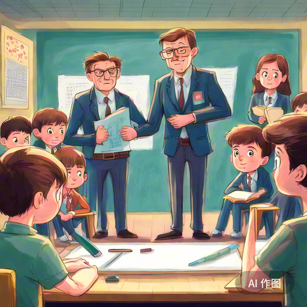
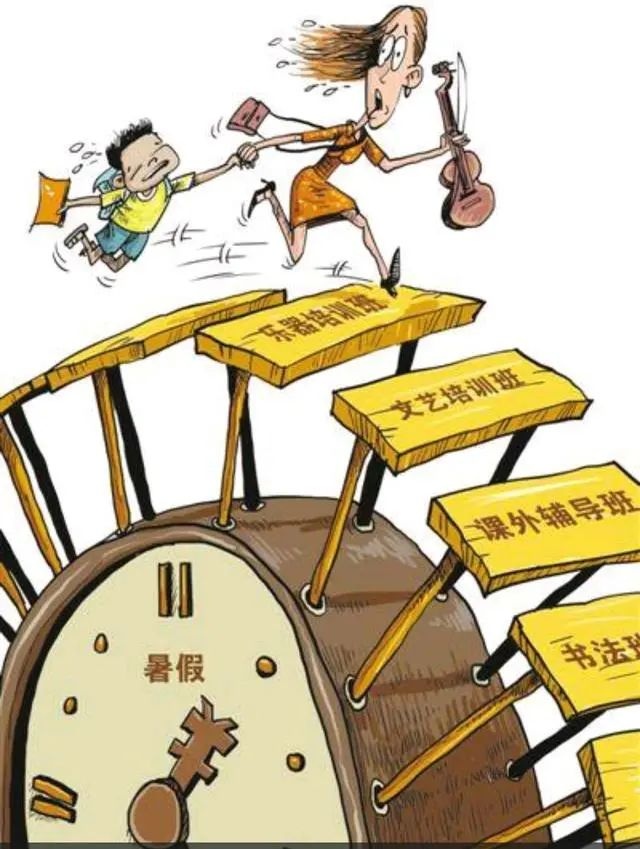
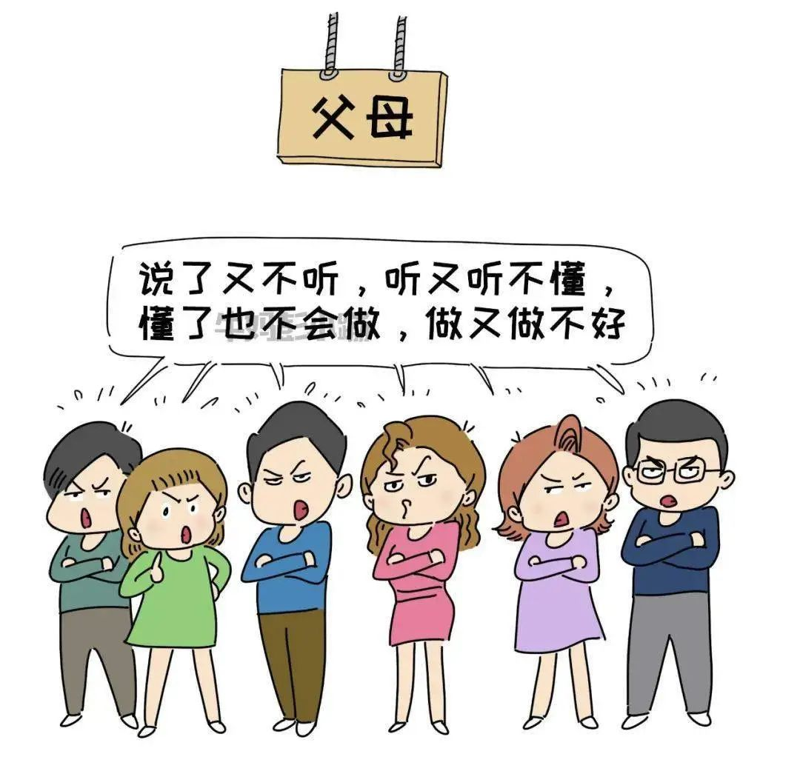
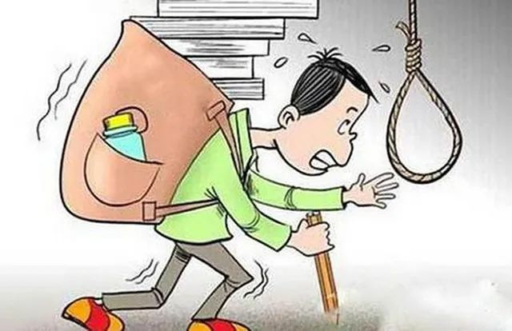

“有教育局的人来敲门问我们在做什么，语文老师说这些都是我的侄子侄女。”
“我妈说我浪费钱，浪费时间，浪费希望。”
“因为只有那个时刻，才是真正属于我自己的世界。”
“我妈说我浪费钱，浪费时间，浪费希望。”
“因为只有那个时刻，才是真正属于我自己的世界。”
“之前我不是上语文课嘛。然后突然，两个教育局的进来就敲门，我还在里面上课，然后一桌子的人，10个人都坐在那桌外面。然后他问我们什么关系，我们坐在这里来这些干嘛的？他（语文老师）说这都是我的侄子。笑死了。就是初一的时候上语文课就被抓到了，后来现在换了个地方搞。”十四岁的小可这样形容自己双减之后的补课，每天就是“地道战”。
|  |
小可是湖南的一名初中生，从小就和她其他同学一样，上各种各样的兴趣班和补习班，深谙补课之道。通常来说，周六上午她需要去上语文课，中午走回来吃个饭就要去上数学课了，周六晚上她的爸爸就会辅导她的物理，作业就留到周日再写。不仅是周末，寒暑假她也是这个节奏，她有时候会觉得特别累，但是没有办法。“暑假里我还是好好学习的，有时候还蛮认真的，但是每天好热的，跑来跑去，都打着伞的那种。然后要热死了，然后每天走。而且我暑假上完语文就马上要上数学，然后马上跑到数学那里去，要不然会迟到。语文老师有时候还会拖堂，然后4：00才下课。本来是2：00~3：50上语文，然后4：10到6：10就是上数学。中间20分钟跑步，换个小区接着上。”
|  |
被问到这样上课会不会迟到，她说因为妈妈讲过迟到一分钟就是10块钱，她不想浪费钱，所以每次下了课就跑得特别快，除了老师拖堂从不迟到，“这样还能锻炼体育中考呢，跑一跑一举多得”，小可得意地提到。
据她所说，她这还算轻松的，因为她成绩一般，所以只用上文化课，要是成绩突出的，还需要额外去上艺术班，去认定中考的加分策略。毕竟，越是尖子生，越难拉开差距，只好用别的方法加分。
“可以说我们这里有一条街，那一条街你一去就非常热闹，然后很多人经过那里，其实你只要观察，每一个学生要么手上有一个包，要么肩上有个包。然后那条街全是补习班，你随便抓一个学生，然后你就问他，请问你是在哪里学的，可以介绍一下吗，我也想上？然后他就可能就会带你去，不过呢，现在有‘双减’，有一些警惕性高的人就会说我没有报。比如我就会这么说。”
面对“双减”政策，小可坦言，对她来说排名依然是按分数排的，和以前没什么差别；作业是阴阳作业，老师会口头布置实际需要完成的作业，量依旧很大；最大的改变就是补习班变成了“地道战”，从前大家都明着上补习班，现在大家上补习班都要偷偷摸摸的不敢跟其他人说。
“有一天我的好像在外面上补习班，然后我们班上班级第一的一个女生，就是年级第三，因为她一直跟我们说是不上补习，后来我就看到她在我在的那个补习班，下完课的时候，我看到她背着书包准备去哪里，然后我又不好说，然后她来看我他们一声，然后我才去（打招呼）。她说hello你去干嘛，我说我上补习班，你去哪里？她就笑一下，她又说她有事就走了。她骗我。之前那个女生拿了年级第一，然后要上台，也有一个人特别大胆，就问他你有没有补习班，报的什么补习班，然后就很尴尬。然后那女生又不好说什么，就说没有，她一平时在家里面写写字，练练琴。我们都不信。”小可无奈的摊摊手。
“双减”政策把她的父母也一起卷进了补习之路，她的妈妈现在是情报处处长，每天打听哪里有好一点的补习班；她的爸爸化身“物理老师”，天天帮她补物理。家里天天鸡飞狗跳，全家为了她的中考大业让路，场面有时候会非常滑稽，她也直言“双减”后父母焦虑了很多。
不过，这样补课有效果吗？我们问小可。面对这个问题，小可沉默了很久，说：“我妈说我浪费钱，浪费时间，浪费希望。”
“看到了，在我妈眼里我就是个失败品，已经开始放弃我了。”
小可在一个周六的晚上发了这样一条朋友圈，配图是她在她妈妈手机里找到的父母吵架妈妈扬言小可已经被“养废”的聊天记录。可能是察觉到这样不妥，在2小时后，她删掉了这条朋友圈。
在老师和家长眼中的小可，是一个“不乖巧”的姑娘，因为她成绩中游、做事磨蹭、喜欢说话、贪玩、喜欢二次元和游戏。如今她已经初三了，临近中考，在五五分流的压力下，她很有可能考不上高中。
“实际上我根本没时间玩，我每天就是写作业，上课，然后练习跑步作为每天的户外活动。你知道吗，今年暑假我都没有离开过株洲，我的同学都出门玩了，就我在家写作业。我已经记不清上次玩游戏是什么时候了”，小可说。除了周末的补习班很折磨人，由于小可课内知识掌握得不好，所以平时晚上8点下了晚自习她还要回去写1个小时到2个小时作业，写到11:00去洗个澡，12点上床。
她的妈妈对此很无奈，“她（小可）真的太磨蹭了，你看晚上八点回来，到家就八点半。她还要吃个宵夜，你说吃就吃吧，吃完就去乖乖写作业。她偏不，她还要跟家里人聊一下今天在学校发生了什么。然后就到9点了，作业还没写完。总是这样磨磨蹭蹭都不专心，作业怎么写得完？”
|  |
她的爸爸暑假期间在给她辅导物理的压轴题，虽然她在物理上有点进步，但她觉得还是蛮不对的。因为每天晚上都要搞物理，最早搞到11点，最晚搞到12点，到后面她非常想睡觉，都有点听不下去了。“其实我有几次不想12:00，11:00睡觉，想早一点，然后还蛮离谱的，生地会考那段时间，有时候12点睡觉，我爸就说小中考都可以12点，为什么你现在又可以了？现在就很想反驳，暑假有时间我还是想休息一下。”
不知道从什么时候开始，小可的父母开始常常责备小可，“有时候题目做得不好，父母就会责备我没有良心，干脆不要学了”，“英语本来就是我的弱势科目，我已经很努力在学习了。英语偏偏让我听写打90分以上，但我就是记不住啊”，“只要成绩提高一点他们就说我是幸运，没有实力。一旦成绩下滑一点就是我在假努力”，“第二天他们还要假惺惺的说，昨晚没睡好又是因为我，又想让我愧疚至极”，“把一天下来在工作上憋的气释放都在我身上，骂完以后还得自我感动一下，说自己辛苦，结果是他们心情舒畅了，反倒是毁了我一天的好心情”……安静、沉默、稍微有两句对话就剑拔弩张，这样的氛围现在是小可家的日常。作为一个小话痨，小可认为这样的氛围很窒息，她都快要忘掉家里上一次欢声笑语是什么时候了。
家里的氛围不是因为小可升入初三才变成这样的，早在初二的生地会考就初见端倪。小可生地会考的时候，她的父母就很紧张，因为听老师说要重视起来，就和中考一样。于是家里就贴上了各种各样的地图或者生物需要背诵的知识点，保证小可每天早上起床能够一边刷牙一边背书；还搞了一百天倒计时，做了各式各样的计划表和小可一起背诵。背到最后那些知识点父母都能和小可一起回忆起来了。所有科目都为生地会考让路，一时间小可家的警戒线拉到了最高。
生地会考之后，小可的学校开个家长会说生地会考就只占了几分，所以没那么重要，之后中考才最重要。小可表示她非常无语，因为她其他科目由于生地会考还落下来挺多的，现在亡羊补牢也很吃力。父母就越发紧张，几乎每一次吵架都是为了小可的成绩和未来。
谈到未来，小可说自己的目标就是考上高中，什么高中都可以：“我这个成绩其实本来就不太好，去哪里都不怎么样。其实我就一般般，真的没有很好，英语还这么偏科，然后暑假过去，英语的好像也没什么进步。我听别人说要是暑假就补不上来，然后初三就没什么机会了。我爸爸就说，我成绩反正都这么一般，可能就只能上一个普通的高中，上高中就行了。”
你还记得你最开心的时候是什么时候吗？
小可说，是周五下午的千人涂鸦，“因为只有那个时刻，才是真正属于我自己的世界”。小可还会画画、书法、舞蹈，她的绘画作品甚至还在市里拿过很不错的奖项。但是从初一开始，她所有的兴趣班都没有再去上过了，她的字也没有以前写得好了，因为“要搞学习”，因为家里说，“又不是艺术生，搞什么艺术”。于是她就这样步入了她的初中生活——
为了体育中考，妈妈会监督小可在风雨交加的天气去负一楼跑步；手机成了严格管控，平时父母会把她的手机带去公司，只能在搜题和跑步打卡的时候使用手机；因为曾经有在房间里玩手机的“前科”，所以书桌被搬到客厅……小可说自己“成为没有隐私的木偶”。
除了在家做“犯人”，小可还觉得自己现在是社交网络的囚徒，朋友圈的信息一边让她焦虑，一边又让她忍不住想多翻翻，“有一些家长可能需要炫耀一下自己家带的娃有多厉害嘛，就在朋友圈晒。有的人我也是好烦躁的。暑假他们在家里搞学习，提前学，搞完以后然后特别就想让你发现，然后就造成的焦虑。还有我朋友圈有一些人他提前学了物理学了DNA，然后他就想炫耀一下自己学得有多厉害，然后搞个100分的卷子拍了照片说‘浅浅晒一下’，就这样焦虑到了。所以这么看其实收手机挺好的，好歹看不到，就没那么紧张。”
曾经的小可是一个活泼、精力充沛、口才好、非常善于表达的孩子，很幽默，善于自我调节，但是随着长大，她越来越不自信，常常会说自己能力不够，常常会说自己很疲惫。她说，“我前天在上物理课，有个同学给我发了张照片，照片里的我当时在发呆。当时放在会考的时候，那时候是生地会考倒计时第三天。然后我就真的听不下，然后在那里发呆。然后他就说你看你自己发呆，然后我现在在我真的想抽死我自己，那一天晚上我都觉得很懊悔。”
懊悔过后，她也明白父母的焦虑没法让她多背下几个单词，难过的心情也并不会提高她的成绩，但是多做几道题多背一点书，说不定未来就会不一样。小可会反思自己的不努力、学不进去，也会试着去多举手回答问题上课认真听讲，也会安慰自己“考上高中就好啦”。毕竟，生活还需要继续。
小可说自己不是最惨的一个。她说，她有一个学体育的同学，因为成绩不是很好，所以妈妈帮他报了全科的补习班，反而导致他写不完作业；她还有一个在学美术的同学，天天从早上7点到晚上9点上课，暑假的每一天都在美术集训，曾经试图自杀未果。她还告诉我们，在高压环境下，她的学校有很多人得了抑郁症。有人得了病忘记吃药，站在围栏边上准备跳楼，幸好被老师发现得及时；有人上课的时候用刀片割自己手，还流好多血，幸好这个同学不坐在她的旁边……
|  |
这些本应该轻松活泼的孩子，却在这样的氛围中生活，被逼得喘不过气，像一张紧绷的弓。有少数几个孩子会崩断那根弦，但更多的孩子在这种环境中慢慢麻木，迷失在无尽的作业与考试之中。“双减”好像让教育的海回归风平浪静，但是当带上潜水镜往海底看去，学生与家庭的压力依然在暗流汹涌。
当被问到自己的压力大不大时，小可笑着跟我们说，她真的还好。因为她喜欢有时候玩一下，该摆的摆。在名为“好前途”的这条路上，她偶尔也会偷偷躺下来，仰望一下头顶的星空。也许有一个平行世界，在那里，她可以尽情地画画，而且得到父母的支持。当美梦结束，喘口气，收拾好行囊，又可以去面对新的征程。小可说，这是她的“处世之道”。